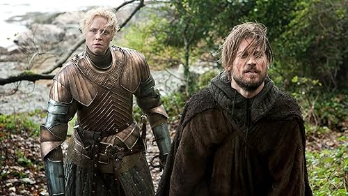
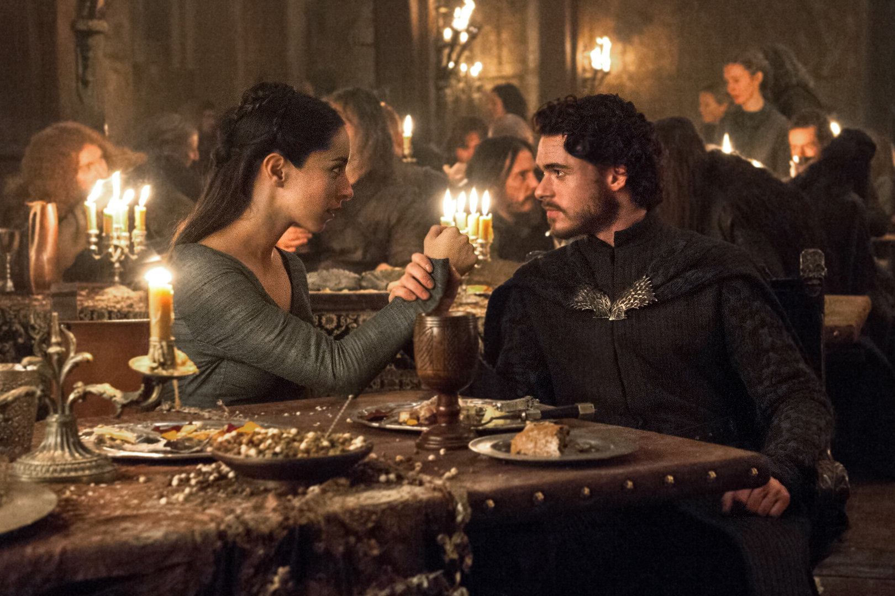

A történet egy prófécával kezdődik amit I. Aegon Targaryen kreált ami, előharangozza a hős eljövetelét aki megmenti majd a világot a sötéttségtől. A sorozat ezt Daenerys Targaryen-re hárítja mindvégig , de ki tudja hogy végül ki is lesz az. Ezt Aegon bele is írta egy penge élébe, amit minden Targaryen uralkodó meg örökölt.
A prófécia így szól: "From my blood comes the prince that was promised and his will be the song of ice and fire."
A Game of Thrones 1. évada Westeros világában játszódik, ahol nemesi házak küzdenek a hatalomért és az "Iron Throne"-ért. A becsületes Stark-ház belekeveredik a fővárosi(King's Landing) politikába, miközben az északi határon nagyon sötét erők ébredeznek, és egy száműzött dinasztia is készül visszatérni. Az évad a hatalom, a hűség és az árulás története.
A királyság széthullik, és több trónkövetelő is harcba indul a hatalomért. Miközben a birodalmat polgárháború sújtja, az északi határnál és a tengeren túl új szövetségek és veszélyek formálódnak. A politikai intrikák és árulások tovább mélyítik a káoszt.
A háborúk kegyetlensége egyre nagyobb áldozatokat követel. A szövetségek törékennyé válnak, és minden döntés komoly következményekkel jár. Miközben egyesek hatalomra törnek, mások a túlélésért küzdenek.
A hatalmi játszmák még veszélyesebbé válnak: a győzelem ára mindenkinek magas. Új vezetők emelkednek fel, régiek buknak el, és a történetben egyre nagyobb szerepet kap a bosszú, a becsület és a túlélés kérdése. A világ határai mögött tovább nő a fenyegetés.
A birodalom romokban hever, mindenki a saját hatalmát próbálja megerősíteni. Vallási fanatizmus, lázadások és politikai játszmák formálják a sorsokat. Közben néhány szereplő a múlt hibáiból próbál tanulni, míg mások új útra lépnek.
Régi titkok kezdenek napvilágra kerülni, miközben a hatalomért vívott harc új szintre lép. Az észak és a dél egyaránt lángba borul, és a szereplőknek szembe kell nézniük a múltjuk következményeivel. A remény és a bosszú határvonalai elmosódnak.
A legnagyobb házak kénytelenek újraértékelni egymáshoz való viszonyukat, miközben az igazi fenyegetés közeledik. Az események felgyorsulnak, a szövetségek ideiglenesek, és mindenki arra készül, hogy eldőljön Westeros sorsa.
A történet elérkezik a végső összecsapáshoz. A szövetségek, árulások és áldozatok évek alatt szőtt hálója végül beteljesedik. Minden karakternek meg kell fizetnie a döntései árát, és kiderül, ki méltó valóban a trónra – vagy egyáltalán marad-e, aki uralkodjon rajta.